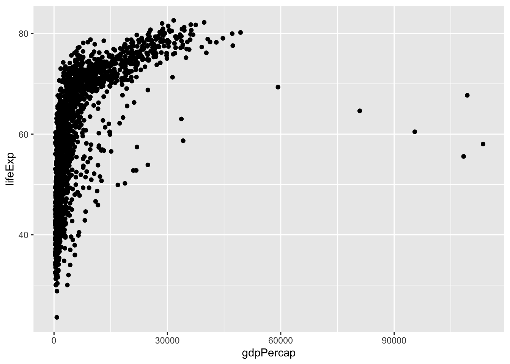
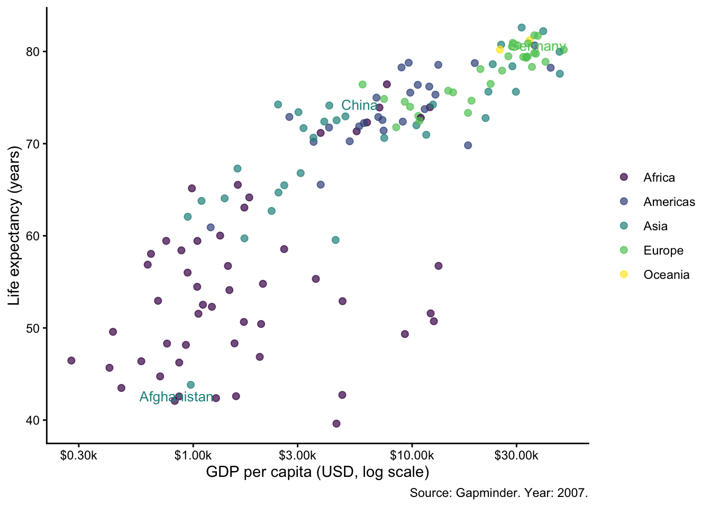
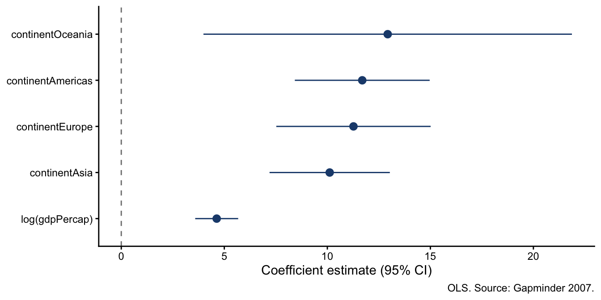
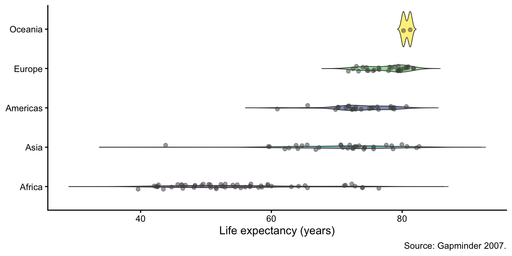
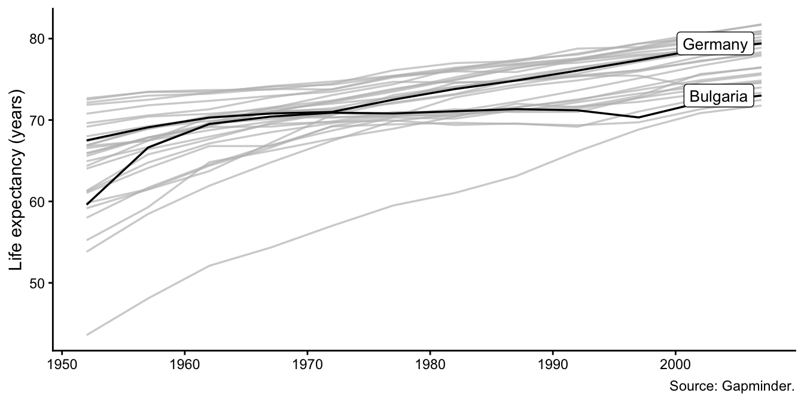
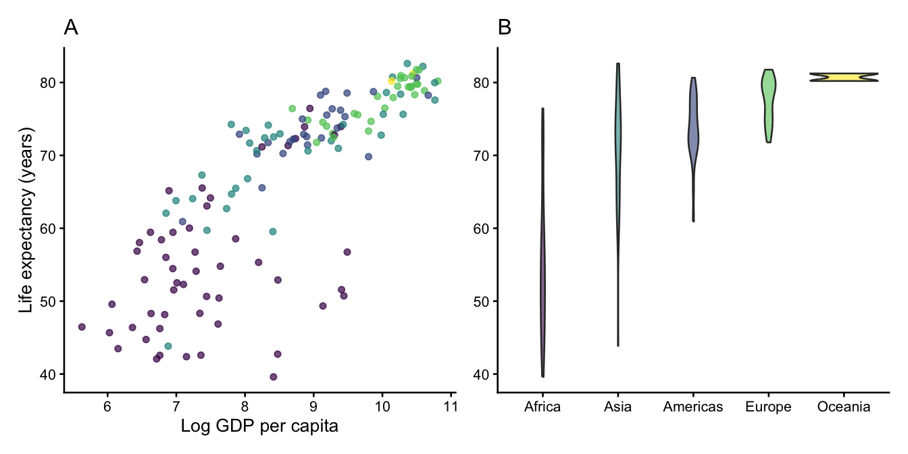

Code
library(tidyverse)
library(patchwork)
library(ggrepel)
library(gghighlight)
library(ggtext)
library(scales)
library(gapminder) # demo data: countries, GDP per capita, life expectancy
library(broom) # for coefficient plotsClaudius Gräbner-Radkowitsch
June 16, 2026
June 16, 2026
The Visualization with ggplot2 tutorial covers the fundamentals: layers, aesthetics, themes, and ggsave(). This tutorial picks up where that one ends and addresses the gap between a working exploratory plot and a figure that is genuinely publication-ready.
That gap has three components. First, many figures are ugly — they use default styling that obscures the message. Second, some figures are bad — they use the wrong encoding for the question and actively mislead. Third, a few are technically wrong — truncated axes, missing uncertainty, or incorrect aggregation. Each problem requires a different fix.
The clearest framework for figure critique comes from Wilke (2019):
| Label | Problem type | Example | Fix |
|---|---|---|---|
| Ugly | Aesthetic | Grey background, raw variable names as axis labels | theme_classic(), labs() |
| Bad | Perceptual | Wrong chart type, overlapping labels, spaghetti line | Rethink the encoding |
| Wrong | Mathematical | No uncertainty, truncated y-axis, incorrect aggregation | Fix the underlying logic |
“It doesn’t look great” is not a diagnosis. “The y-axis is truncated and the comparison is therefore wrong” is. Always identify which category of problem you are fixing before changing any code.

gapminder |>
filter(year == 2007) |>
ggplot(aes(x = gdpPercap, y = lifeExp, color = continent)) +
geom_point(alpha = 0.7, size = 2) +
geom_text_repel(
aes(label = country),
data = \(d) filter(d, country %in% c("Germany", "Afghanistan", "China")),
size = 3.5, show.legend = FALSE
) +
scale_x_log10(labels = label_dollar(suffix = "k", scale = 0.001)) +
scale_color_viridis_d() +
theme_classic(base_size = 11) +
labs(
x = "GDP per capita (USD, log scale)",
y = "Life expectancy (years)",
color = NULL,
caption = "Source: Gapminder. Year: 2007."
)
The first version is exploratory — fine for your own analysis. The second is ready for a report or submission. Notice what changed: log scale to linearise the relationship, country labels for key points, color by continent, clean theme, human-readable axis labels, and a source caption.
Choose the chart type based on the research question, before opening any AI tool or writing any ggplot2 code. AI defaults to whatever was most common in its training data — usually a bar chart.
| Question type | Chart | Key geom(s) |
|---|---|---|
| Regression coefficients + uncertainty | Coefficient plot | geom_pointrange() |
| Distributions across groups | Violin + jitter | geom_violin() + geom_jitter() |
| Bivariate with subgroup heterogeneity | Faceted scatter | geom_smooth() + facet_wrap() |
| Time series, multiple units | Highlighted lines | geom_line() + gghighlight() |
| Event study / treatment effect | Centred point-range | geom_pointrange() + geom_vline() |
“What predicts life expectancy, and how uncertain are we?”
gap07 <- gapminder |> filter(year == 2007)
fit <- lm(lifeExp ~ log(gdpPercap) + continent, data = gap07)
tidy(fit, conf.int = TRUE) |>
filter(term != "(Intercept)") |>
ggplot(aes(x = estimate, y = reorder(term, estimate),
xmin = conf.low, xmax = conf.high)) +
geom_pointrange(colour = "#1e4a7b") +
geom_vline(xintercept = 0, linetype = "dashed", colour = "grey50") +
theme_classic(base_size = 11) +
labs(x = "Coefficient estimate (95% CI)", y = NULL,
caption = "OLS. Source: Gapminder 2007.")
Key geom: geom_pointrange() — estimate and uncertainty in a single layer. Always more informative than a bar chart showing only point estimates.
“How does life expectancy distribute across continents?”
gapminder |>
filter(year == 2007) |>
ggplot(aes(x = reorder(continent, lifeExp, median), y = lifeExp, fill = continent)) +
geom_violin(alpha = 0.6, linewidth = 0.3, trim = FALSE) +
geom_jitter(width = 0.07, alpha = 0.5, size = 1.5, colour = "grey30") +
scale_fill_viridis_d(guide = "none") +
coord_flip() +
theme_classic(base_size = 11) +
labs(x = NULL, y = "Life expectancy (years)", caption = "Source: Gapminder 2007.")
Violins show the shape of the distribution; jitter shows the raw data points. Together they communicate more than a box plot alone.
“How has life expectancy evolved across European countries, highlighting Germany and Bulgaria?”
gapminder |>
filter(continent == "Europe") |>
ggplot(aes(x = year, y = lifeExp, group = country)) +
geom_line(linewidth = 0.6) +
gghighlight(
country %in% c("Germany", "Bulgaria"),
use_direct_label = TRUE,
label_params = list(size = 3.5)
) +
theme_classic(base_size = 11) +
labs(x = NULL, y = "Life expectancy (years)", caption = "Source: Gapminder.")
gghighlight greys out non-highlighted lines and adds direct labels — keeping context without spaghetti.
Compose separate ggplot objects with +, |, and /:
p1 <- gapminder |>
filter(year == 2007) |>
ggplot(aes(log(gdpPercap), lifeExp, color = continent)) +
geom_point(alpha = 0.7, show.legend = FALSE) +
scale_color_viridis_d() +
theme_classic(base_size = 10) +
labs(x = "Log GDP per capita", y = "Life expectancy (years)", title = "A")
p2 <- gapminder |>
filter(year == 2007) |>
ggplot(aes(reorder(continent, lifeExp, median), lifeExp, fill = continent)) +
geom_violin(alpha = 0.6, show.legend = FALSE) +
scale_fill_viridis_d() +
theme_classic(base_size = 10) +
labs(x = NULL, y = NULL, title = "B")
p1 | p2
For more control, use plot_annotation() for shared titles and plot_layout(guides = "collect") to merge legends:
Use max.overlaps = Inf to force all labels, or filter data = to label only specific points.
Combine with use_direct_label = FALSE if you want to add your own labels via geom_text_repel.
Use element_markdown() to render Markdown in titles, subtitles, and axis labels:
This allows bold, italic, and coloured text without external image editing — useful for publication titles that reference specific groups or model specifications.
Never leave raw variable names or scientific notation on axes in a submitted figure.
Before finalising any figure, verify:
scale_colour_viridis_d() or Okabe-Ito (scale_colour_manual(values = palette.colors(8, "Okabe-Ito")))theme_classic() or theme_minimal(); no default grey backgroundtheme_*(base_size = 11)labs(caption = "...")ggsave() with width, height, and unitsNever use the RStudio Export button — it produces inconsistently sized output that will not match a submitted manuscript:
For HTML output, save as .png with dpi = 300. For Word output, save as .png with dpi = 300 and insert via knitr::include_graphics().
| Skill | Key tool | When to use |
|---|---|---|
| Diagnose a figure | Ugly/bad/wrong framework | Before any code changes |
| Choose chart type | Question → chart table | Before any code, before AI |
| Multi-panel layout | patchwork |
Two or more related panels |
| Label specific points | ggrepel |
Scatter plots with labelled outliers |
| Focus on one subset | gghighlight |
Time series with many units |
| Markdown in text | ggtext |
Titles referencing groups/colours |
| Axis formatting | scales |
Any numeric axis |
| Save correctly | ggsave() |
Every figure in every project |
@misc{gräbner-radkowitsch2026,
author = {Gräbner-Radkowitsch, Claudius},
editor = {Gräbner-Radkowitsch, Claudius},
title = {Publication-Ready {Figures} with Ggplot2},
date = {2026-06-16},
url = {https://euf-methodology-hub.netlify.app/resources/r-programming/publication-ready-figures-ggplot2},
langid = {en}
}
---
title: "Publication-Ready Figures with ggplot2"
description: "Move beyond exploratory plots to publication-ready figures: choose the right chart type, apply the 7-item checklist, and use patchwork, ggrepel, gghighlight, ggtext, and scales to produce submission-quality output."
author: "Claudius Gräbner-Radkowitsch"
date: 2026-06-16
date-modified: 2026-06-16
image: ../../assets/images/r-programming.png
learning-objectives:
- "Diagnose a figure as ugly, bad, or wrong and identify the appropriate fix for each"
- "Select the right chart type for five common research communication tasks before writing any code"
- "Apply the 7-item publication checklist to a ggplot2 figure and identify which items need attention"
- "Use `patchwork`, `ggrepel`, `gghighlight`, `ggtext`, and `scales` to address specific publication requirements"
categories:
- R
- visualization
- MA
- tutorial
level:
- MA
content-type: tutorial
citation:
type: entry
container-title: "Methods Hub"
title: "Publication-Ready Figures with ggplot2"
editor:
- name: "Claudius Gräbner-Radkowitsch"
url: https://euf-methodology-hub.netlify.app/resources/r-programming/publication-ready-figures-ggplot2
---
# Introduction
The [Visualization with ggplot2](visualization-ggplot2.qmd) tutorial covers the fundamentals: layers, aesthetics, themes, and `ggsave()`. This tutorial picks up where that one ends and addresses the gap between a working exploratory plot and a figure that is genuinely publication-ready.
That gap has three components. First, many figures are **ugly** — they use default styling that obscures the message. Second, some figures are **bad** — they use the wrong encoding for the question and actively mislead. Third, a few are technically **wrong** — truncated axes, missing uncertainty, or incorrect aggregation. Each problem requires a different fix.
## Packages
```{r}
#| label: setup
#| message: false
library(tidyverse)
library(patchwork)
library(ggrepel)
library(gghighlight)
library(ggtext)
library(scales)
library(gapminder) # demo data: countries, GDP per capita, life expectancy
library(broom) # for coefficient plots
```
# Diagnosing Figures: Ugly, Bad, Wrong
The clearest framework for figure critique comes from Wilke (2019):
| Label | Problem type | Example | Fix |
|---|---|---|---|
| **Ugly** | Aesthetic | Grey background, raw variable names as axis labels | `theme_classic()`, `labs()` |
| **Bad** | Perceptual | Wrong chart type, overlapping labels, spaghetti line | Rethink the encoding |
| **Wrong** | Mathematical | No uncertainty, truncated y-axis, incorrect aggregation | Fix the underlying logic |
::: {.callout-important}
"It doesn't look great" is not a diagnosis. "The y-axis is truncated and the comparison is therefore wrong" is. Always identify *which* category of problem you are fixing before changing any code.
:::
## Same data, two figures
```{r}
#| label: fig-exploratory
#| fig-cap: "Exploratory: default output — ugly but functional."
ggplot(gapminder, aes(x = gdpPercap, y = lifeExp)) +
geom_point()
```
```{r}
#| label: fig-pubready
#| fig-cap: "Publication-ready: subset to 2007, log scale, labelled points, clean theme."
#| message: false
gapminder |>
filter(year == 2007) |>
ggplot(aes(x = gdpPercap, y = lifeExp, color = continent)) +
geom_point(alpha = 0.7, size = 2) +
geom_text_repel(
aes(label = country),
data = \(d) filter(d, country %in% c("Germany", "Afghanistan", "China")),
size = 3.5, show.legend = FALSE
) +
scale_x_log10(labels = label_dollar(suffix = "k", scale = 0.001)) +
scale_color_viridis_d() +
theme_classic(base_size = 11) +
labs(
x = "GDP per capita (USD, log scale)",
y = "Life expectancy (years)",
color = NULL,
caption = "Source: Gapminder. Year: 2007."
)
```
The first version is exploratory — fine for your own analysis. The second is ready for a report or submission. Notice what changed: log scale to linearise the relationship, country labels for key points, color by continent, clean theme, human-readable axis labels, and a source caption.
# Choosing the Right Chart Type
::: {.callout-important}
## Decide before you code
Choose the chart type based on the research question, **before** opening any AI tool or writing any ggplot2 code. AI defaults to whatever was most common in its training data — usually a bar chart.
:::
| Question type | Chart | Key geom(s) |
|---|---|---|
| Regression coefficients + uncertainty | Coefficient plot | `geom_pointrange()` |
| Distributions across groups | Violin + jitter | `geom_violin()` + `geom_jitter()` |
| Bivariate with subgroup heterogeneity | Faceted scatter | `geom_smooth()` + `facet_wrap()` |
| Time series, multiple units | Highlighted lines | `geom_line()` + `gghighlight()` |
| Event study / treatment effect | Centred point-range | `geom_pointrange()` + `geom_vline()` |
## Example 1: Coefficient plot
*"What predicts life expectancy, and how uncertain are we?"*
```{r}
#| label: fig-coefplot
#| fig-cap: "Coefficient plot: estimate + 95% CI for life expectancy predictors (Gapminder 2007)."
#| fig-height: 3.5
gap07 <- gapminder |> filter(year == 2007)
fit <- lm(lifeExp ~ log(gdpPercap) + continent, data = gap07)
tidy(fit, conf.int = TRUE) |>
filter(term != "(Intercept)") |>
ggplot(aes(x = estimate, y = reorder(term, estimate),
xmin = conf.low, xmax = conf.high)) +
geom_pointrange(colour = "#1e4a7b") +
geom_vline(xintercept = 0, linetype = "dashed", colour = "grey50") +
theme_classic(base_size = 11) +
labs(x = "Coefficient estimate (95% CI)", y = NULL,
caption = "OLS. Source: Gapminder 2007.")
```
Key geom: `geom_pointrange()` — estimate and uncertainty in a single layer. Always more informative than a bar chart showing only point estimates.
## Example 2: Violin + jitter
*"How does life expectancy distribute across continents?"*
```{r}
#| label: fig-violin
#| fig-cap: "Distribution of life expectancy by continent (Gapminder 2007)."
#| fig-height: 3.5
gapminder |>
filter(year == 2007) |>
ggplot(aes(x = reorder(continent, lifeExp, median), y = lifeExp, fill = continent)) +
geom_violin(alpha = 0.6, linewidth = 0.3, trim = FALSE) +
geom_jitter(width = 0.07, alpha = 0.5, size = 1.5, colour = "grey30") +
scale_fill_viridis_d(guide = "none") +
coord_flip() +
theme_classic(base_size = 11) +
labs(x = NULL, y = "Life expectancy (years)", caption = "Source: Gapminder 2007.")
```
Violins show the shape of the distribution; jitter shows the raw data points. Together they communicate more than a box plot alone.
## Example 3: Highlighted lines
*"How has life expectancy evolved across European countries, highlighting Germany and Bulgaria?"*
```{r}
#| label: fig-lines
#| fig-cap: "Life expectancy trends in Europe. Germany and Bulgaria highlighted with gghighlight."
#| fig-height: 3.5
gapminder |>
filter(continent == "Europe") |>
ggplot(aes(x = year, y = lifeExp, group = country)) +
geom_line(linewidth = 0.6) +
gghighlight(
country %in% c("Germany", "Bulgaria"),
use_direct_label = TRUE,
label_params = list(size = 3.5)
) +
theme_classic(base_size = 11) +
labs(x = NULL, y = "Life expectancy (years)", caption = "Source: Gapminder.")
```
`gghighlight` greys out non-highlighted lines and adds direct labels — keeping context without spaghetti.
# Five Extensions Worth Knowing
## patchwork — multi-panel layout
Compose separate `ggplot` objects with `+`, `|`, and `/`:
```{r}
#| label: fig-patchwork
#| fig-cap: "Two-panel figure composed with patchwork, panels labelled A and B."
#| fig-height: 3.5
p1 <- gapminder |>
filter(year == 2007) |>
ggplot(aes(log(gdpPercap), lifeExp, color = continent)) +
geom_point(alpha = 0.7, show.legend = FALSE) +
scale_color_viridis_d() +
theme_classic(base_size = 10) +
labs(x = "Log GDP per capita", y = "Life expectancy (years)", title = "A")
p2 <- gapminder |>
filter(year == 2007) |>
ggplot(aes(reorder(continent, lifeExp, median), lifeExp, fill = continent)) +
geom_violin(alpha = 0.6, show.legend = FALSE) +
scale_fill_viridis_d() +
theme_classic(base_size = 10) +
labs(x = NULL, y = NULL, title = "B")
p1 | p2
```
For more control, use `plot_annotation()` for shared titles and `plot_layout(guides = "collect")` to merge legends:
```{r}
#| eval: false
(p1 | p2) +
plot_annotation(
title = "Income, continents, and life expectancy (2007)",
tag_levels = "A"
) +
plot_layout(guides = "collect")
```
## ggrepel — non-overlapping labels
```{r}
#| eval: false
geom_text_repel(aes(label = country)) # repels text labels
geom_label_repel(aes(label = country)) # repels label boxes
```
Use `max.overlaps = Inf` to force all labels, or filter `data =` to label only specific points.
## gghighlight — focus attention
```{r}
#| eval: false
gghighlight(condition) # grey out everything else
gghighlight(continent == "Europe") # keep only one group
```
Combine with `use_direct_label = FALSE` if you want to add your own labels via `geom_text_repel`.
## ggtext — Markdown in plot text
Use `element_markdown()` to render Markdown in titles, subtitles, and axis labels:
```{r}
#| eval: false
ggplot(data, aes(x, y)) +
labs(title = "**Treated** firms earn *significantly* more than <span style='color:#D04A2F'>controls</span>") +
theme(plot.title = element_markdown())
```
This allows bold, italic, and coloured text without external image editing — useful for publication titles that reference specific groups or model specifications.
## scales — axis formatting
```{r}
#| eval: false
scale_y_continuous(labels = label_comma()) # 1,234,567
scale_y_continuous(labels = label_percent()) # 12.3%
scale_x_log10(labels = label_dollar()) # $1,000
scale_x_log10(labels = label_dollar(suffix = "k", scale = 0.001)) # $1k
```
Never leave raw variable names or scientific notation on axes in a submitted figure.
# The 7-Item Publication Checklist
Before finalising any figure, verify:
1. **Axis labels with units** — no raw variable names; include units where applicable
2. **Colorblind-safe palette** — `scale_colour_viridis_d()` or Okabe-Ito (`scale_colour_manual(values = palette.colors(8, "Okabe-Ito"))`)
3. **Uncertainty on every estimate** — confidence intervals, not just point estimates
4. **Clean theme** — `theme_classic()` or `theme_minimal()`; no default grey background
5. **Base size ~10–12pt** for a 3.5-inch figure; use `theme_*(base_size = 11)`
6. **Source and notes** in `labs(caption = "...")`
7. **Saved with explicit dimensions** — `ggsave()` with width, height, and units
## Saving correctly
Never use the RStudio Export button — it produces inconsistently sized output that will not match a submitted manuscript:
```{r}
#| eval: false
ggsave(
"figures/fig1.pdf",
plot = p,
width = 5.5,
height = 3.5,
units = "in",
device = cairo_pdf # embeds fonts correctly for journal submission
)
```
For HTML output, save as `.png` with `dpi = 300`. For Word output, save as `.png` with `dpi = 300` and insert via `knitr::include_graphics()`.
# Summary
| Skill | Key tool | When to use |
|---|---|---|
| Diagnose a figure | Ugly/bad/wrong framework | Before any code changes |
| Choose chart type | Question → chart table | Before any code, before AI |
| Multi-panel layout | `patchwork` | Two or more related panels |
| Label specific points | `ggrepel` | Scatter plots with labelled outliers |
| Focus on one subset | `gghighlight` | Time series with many units |
| Markdown in text | `ggtext` | Titles referencing groups/colours |
| Axis formatting | `scales` | Any numeric axis |
| Save correctly | `ggsave()` | Every figure in every project |
# Further Reading
- Wilke, C. (2019). *Fundamentals of Data Visualization*. O'Reilly. [clauswilke.com/dataviz](https://clauswilke.com/dataviz) — Open access; the ugly/bad/wrong framework comes from here.
- Healy, K. (2018). *Data Visualization: A Practical Introduction*. Princeton UP. [socviz.co](https://socviz.co) — Open access draft; strong on the sociology of figures.